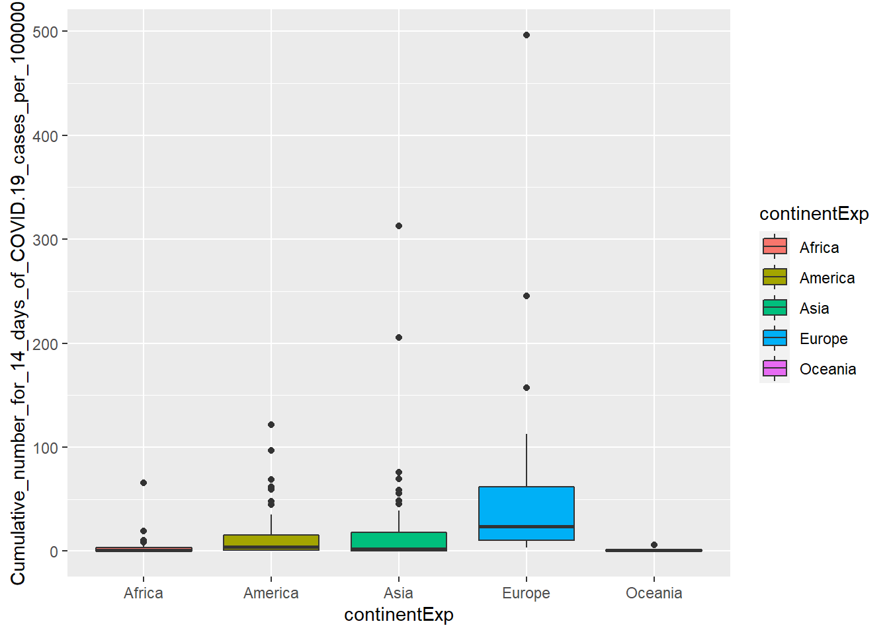
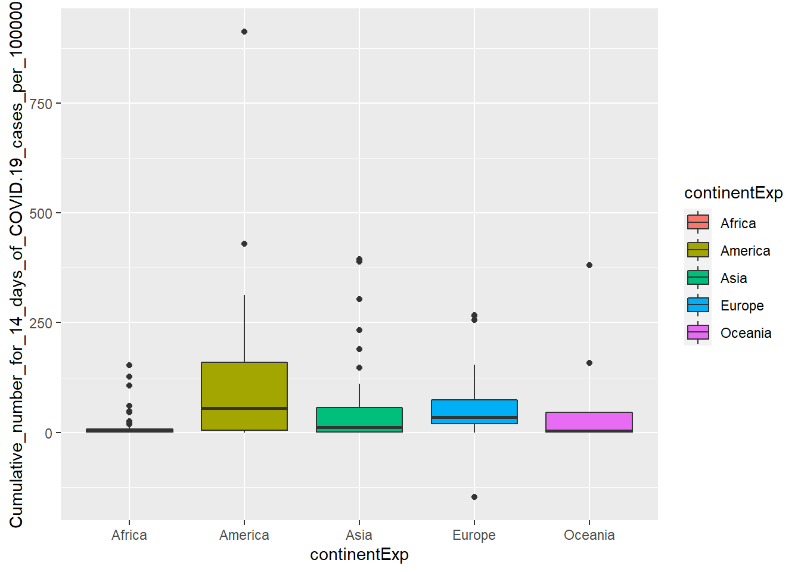

P-hacking COVID-19 (c.elegans)
c.elegans
9/15/2020
Last updated: 2020-09-18
Checks: 7 0
Knit directory: P_hacking/
This reproducible R Markdown analysis was created with workflowr (version 1.6.2). The Checks tab describes the reproducibility checks that were applied when the results were created. The Past versions tab lists the development history.
Great! Since the R Markdown file has been committed to the Git repository, you know the exact version of the code that produced these results.
Great job! The global environment was empty. Objects defined in the global environment can affect the analysis in your R Markdown file in unknown ways. For reproduciblity it’s best to always run the code in an empty environment.
The command set.seed(20200916) was run prior to running the code in the R Markdown file. Setting a seed ensures that any results that rely on randomness, e.g. subsampling or permutations, are reproducible.
Great job! Recording the operating system, R version, and package versions is critical for reproducibility.
Nice! There were no cached chunks for this analysis, so you can be confident that you successfully produced the results during this run.
Great job! Using relative paths to the files within your workflowr project makes it easier to run your code on other machines.
Great! You are using Git for version control. Tracking code development and connecting the code version to the results is critical for reproducibility.
The results in this page were generated with repository version be9f57c. See the Past versions tab to see a history of the changes made to the R Markdown and HTML files.
Note that you need to be careful to ensure that all relevant files for the analysis have been committed to Git prior to generating the results (you can use wflow_publish or wflow_git_commit). workflowr only checks the R Markdown file, but you know if there are other scripts or data files that it depends on. Below is the status of the Git repository when the results were generated:
Ignored files:
Ignored: .Rhistory
Ignored: .Rproj.user/
Note that any generated files, e.g. HTML, png, CSS, etc., are not included in this status report because it is ok for generated content to have uncommitted changes.
These are the previous versions of the repository in which changes were made to the R Markdown (analysis/P-hacking_COVID-19_c.elegans.Rmd) and HTML (docs/P-hacking_COVID-19_c.elegans.html) files. If you’ve configured a remote Git repository (see ?wflow_git_remote), click on the hyperlinks in the table below to view the files as they were in that past version.
| File | Version | Author | Date | Message |
|---|---|---|---|---|
| Rmd | be9f57c | KiseokUchicago | 2020-09-18 | wflow_publish("analysis/*Rmd") |
| html | 225bad1 | KiseokUchicago | 2020-09-18 | Build site. |
| Rmd | c0f1201 | KiseokUchicago | 2020-09-18 | wflow_publish("analysis/*Rmd") |
| html | be258b9 | KiseokUchicago | 2020-09-16 | Build site. |
| html | a5535ee | KiseokUchicago | 2020-09-16 | Build site. |
| Rmd | 955fa1a | KiseokUchicago | 2020-09-16 | push |
| Rmd | 8c2f84a | KiseokUchicago | 2020-09-16 | wflow_git_commit(files = "analysis/*Rmd", message = NULL, all = FALSE, |
library(tidyverse)
library(utils)
# Read the data
covid <- read.csv("https://opendata.ecdc.europa.eu/covid19/casedistribution/csv", na.strings = "", fileEncoding = "UTF-8-BOM")Inspect the Data
head(covid) dateRep day month year cases deaths countriesAndTerritories geoId
1 18/09/2020 18 9 2020 0 0 Afghanistan AF
2 17/09/2020 17 9 2020 17 0 Afghanistan AF
3 16/09/2020 16 9 2020 40 10 Afghanistan AF
4 15/09/2020 15 9 2020 99 6 Afghanistan AF
5 14/09/2020 14 9 2020 75 0 Afghanistan AF
6 13/09/2020 13 9 2020 35 0 Afghanistan AF
countryterritoryCode popData2019 continentExp
1 AFG 38041757 Asia
2 AFG 38041757 Asia
3 AFG 38041757 Asia
4 AFG 38041757 Asia
5 AFG 38041757 Asia
6 AFG 38041757 Asia
Cumulative_number_for_14_days_of_COVID.19_cases_per_100000
1 1.535155
2 1.653446
3 1.708649
4 1.627159
5 1.456294
6 1.309088colnames(covid) [1] "dateRep"
[2] "day"
[3] "month"
[4] "year"
[5] "cases"
[6] "deaths"
[7] "countriesAndTerritories"
[8] "geoId"
[9] "countryterritoryCode"
[10] "popData2019"
[11] "continentExp"
[12] "Cumulative_number_for_14_days_of_COVID.19_cases_per_100000"str(covid)'data.frame': 43509 obs. of 12 variables:
$ dateRep : chr "18/09/2020" "17/09/2020" "16/09/2020" "15/09/2020" ...
$ day : int 18 17 16 15 14 13 12 11 10 9 ...
$ month : int 9 9 9 9 9 9 9 9 9 9 ...
$ year : int 2020 2020 2020 2020 2020 2020 2020 2020 2020 2020 ...
$ cases : int 0 17 40 99 75 35 34 28 24 26 ...
$ deaths : int 0 0 10 6 0 0 0 0 2 3 ...
$ countriesAndTerritories : chr "Afghanistan" "Afghanistan" "Afghanistan" "Afghanistan" ...
$ geoId : chr "AF" "AF" "AF" "AF" ...
$ countryterritoryCode : chr "AFG" "AFG" "AFG" "AFG" ...
$ popData2019 : int 38041757 38041757 38041757 38041757 38041757 38041757 38041757 38041757 38041757 38041757 ...
$ continentExp : chr "Asia" "Asia" "Asia" "Asia" ...
$ Cumulative_number_for_14_days_of_COVID.19_cases_per_100000: num 1.54 1.65 1.71 1.63 1.46 ...summary(covid) dateRep day month year
Length:43509 Min. : 1.00 Min. : 1.000 Min. :2019
Class :character 1st Qu.: 8.00 1st Qu.: 4.000 1st Qu.:2020
Mode :character Median :15.00 Median : 6.000 Median :2020
Mean :15.63 Mean : 5.603 Mean :2020
3rd Qu.:23.00 3rd Qu.: 7.000 3rd Qu.:2020
Max. :31.00 Max. :12.000 Max. :2020
cases deaths countriesAndTerritories
Min. :-8261.0 Min. :-1918.00 Length:43509
1st Qu.: 0.0 1st Qu.: 0.00 Class :character
Median : 9.0 Median : 0.00 Mode :character
Mean : 694.4 Mean : 21.76
3rd Qu.: 148.0 3rd Qu.: 3.00
Max. :97894.0 Max. : 4928.00
geoId countryterritoryCode popData2019 continentExp
Length:43509 Length:43509 Min. :8.150e+02 Length:43509
Class :character Class :character 1st Qu.:1.356e+06 Class :character
Mode :character Mode :character Median :8.519e+06 Mode :character
Mean :4.290e+07
3rd Qu.:2.916e+07
Max. :1.434e+09
NA's :64
Cumulative_number_for_14_days_of_COVID.19_cases_per_100000
Min. :-147.4196
1st Qu.: 0.3668
Median : 4.5360
Mean : 32.8394
3rd Qu.: 26.3765
Max. :1058.2259
NA's :2781 P-hacking
Let’s use the continent categorical data to see if it has significant impact on the covid-19 cases (for the 14 day period)
#library(qvalue)
data <- covid
unique(data$dateRep) [1] "18/09/2020" "17/09/2020" "16/09/2020" "15/09/2020" "14/09/2020"
[6] "13/09/2020" "12/09/2020" "11/09/2020" "10/09/2020" "09/09/2020"
[11] "08/09/2020" "07/09/2020" "06/09/2020" "05/09/2020" "04/09/2020"
[16] "03/09/2020" "02/09/2020" "01/09/2020" "31/08/2020" "30/08/2020"
[21] "29/08/2020" "28/08/2020" "27/08/2020" "26/08/2020" "25/08/2020"
[26] "24/08/2020" "23/08/2020" "22/08/2020" "21/08/2020" "20/08/2020"
[31] "19/08/2020" "18/08/2020" "17/08/2020" "16/08/2020" "15/08/2020"
[36] "14/08/2020" "13/08/2020" "12/08/2020" "11/08/2020" "10/08/2020"
[41] "09/08/2020" "08/08/2020" "07/08/2020" "06/08/2020" "05/08/2020"
[46] "04/08/2020" "03/08/2020" "02/08/2020" "01/08/2020" "31/07/2020"
[51] "30/07/2020" "29/07/2020" "28/07/2020" "27/07/2020" "26/07/2020"
[56] "25/07/2020" "24/07/2020" "23/07/2020" "22/07/2020" "21/07/2020"
[61] "20/07/2020" "19/07/2020" "18/07/2020" "17/07/2020" "16/07/2020"
[66] "15/07/2020" "14/07/2020" "13/07/2020" "12/07/2020" "11/07/2020"
[71] "10/07/2020" "09/07/2020" "08/07/2020" "07/07/2020" "06/07/2020"
[76] "05/07/2020" "04/07/2020" "03/07/2020" "02/07/2020" "01/07/2020"
[81] "30/06/2020" "29/06/2020" "28/06/2020" "27/06/2020" "26/06/2020"
[86] "25/06/2020" "24/06/2020" "23/06/2020" "22/06/2020" "21/06/2020"
[91] "20/06/2020" "19/06/2020" "18/06/2020" "17/06/2020" "16/06/2020"
[96] "15/06/2020" "14/06/2020" "13/06/2020" "12/06/2020" "11/06/2020"
[101] "10/06/2020" "09/06/2020" "08/06/2020" "07/06/2020" "06/06/2020"
[106] "05/06/2020" "04/06/2020" "03/06/2020" "02/06/2020" "01/06/2020"
[111] "31/05/2020" "30/05/2020" "29/05/2020" "28/05/2020" "27/05/2020"
[116] "26/05/2020" "25/05/2020" "24/05/2020" "23/05/2020" "22/05/2020"
[121] "21/05/2020" "20/05/2020" "19/05/2020" "18/05/2020" "17/05/2020"
[126] "16/05/2020" "15/05/2020" "14/05/2020" "13/05/2020" "12/05/2020"
[131] "11/05/2020" "10/05/2020" "09/05/2020" "08/05/2020" "07/05/2020"
[136] "06/05/2020" "05/05/2020" "04/05/2020" "03/05/2020" "02/05/2020"
[141] "01/05/2020" "30/04/2020" "29/04/2020" "28/04/2020" "27/04/2020"
[146] "26/04/2020" "25/04/2020" "24/04/2020" "23/04/2020" "22/04/2020"
[151] "21/04/2020" "20/04/2020" "19/04/2020" "18/04/2020" "17/04/2020"
[156] "16/04/2020" "15/04/2020" "14/04/2020" "13/04/2020" "12/04/2020"
[161] "11/04/2020" "10/04/2020" "09/04/2020" "08/04/2020" "07/04/2020"
[166] "06/04/2020" "05/04/2020" "04/04/2020" "03/04/2020" "02/04/2020"
[171] "01/04/2020" "31/03/2020" "30/03/2020" "29/03/2020" "28/03/2020"
[176] "27/03/2020" "26/03/2020" "25/03/2020" "24/03/2020" "23/03/2020"
[181] "22/03/2020" "21/03/2020" "20/03/2020" "19/03/2020" "18/03/2020"
[186] "17/03/2020" "16/03/2020" "15/03/2020" "11/03/2020" "08/03/2020"
[191] "02/03/2020" "01/03/2020" "29/02/2020" "28/02/2020" "27/02/2020"
[196] "26/02/2020" "25/02/2020" "24/02/2020" "23/02/2020" "22/02/2020"
[201] "21/02/2020" "20/02/2020" "19/02/2020" "18/02/2020" "17/02/2020"
[206] "16/02/2020" "15/02/2020" "14/02/2020" "13/02/2020" "12/02/2020"
[211] "11/02/2020" "10/02/2020" "09/02/2020" "08/02/2020" "07/02/2020"
[216] "06/02/2020" "05/02/2020" "04/02/2020" "03/02/2020" "02/02/2020"
[221] "01/02/2020" "31/01/2020" "30/01/2020" "29/01/2020" "28/01/2020"
[226] "27/01/2020" "26/01/2020" "25/01/2020" "24/01/2020" "23/01/2020"
[231] "22/01/2020" "21/01/2020" "20/01/2020" "19/01/2020" "18/01/2020"
[236] "17/01/2020" "16/01/2020" "15/01/2020" "14/01/2020" "13/01/2020"
[241] "12/01/2020" "11/01/2020" "10/01/2020" "09/01/2020" "08/01/2020"
[246] "07/01/2020" "06/01/2020" "05/01/2020" "04/01/2020" "03/01/2020"
[251] "02/01/2020" "01/01/2020" "31/12/2019" "14/03/2020" "13/03/2020"
[256] "12/03/2020" "10/03/2020" "09/03/2020" "06/03/2020" "05/03/2020"
[261] "04/03/2020" "03/03/2020" "07/03/2020"dates<-unique(data$dateRep) #263 days
length(dates)[1] 263Testing significance of Whether the country is in the America continent
# make a loop through all the dates
pvals_df <- data.frame(dateRep=character(),
pval=double(),
pval.adjust=double(),
stringsAsFactors=FALSE)
counter <- 0
for(i in 1:length(dates)){
date<-dates[i]
print(date)
data_t <- data[data$dateRep==date,]
model_t <-lm(Cumulative_number_for_14_days_of_COVID.19_cases_per_100000 ~ continentExp,data=data_t)
pval <- summary(model_t)$coefficients[-1,4]['continentExpAmerica']
pval.adjust <- p.adjust(pval, method='fdr', n=length(dates))
pvals_df <- rbind(pvals_df, c(date,pval,pval.adjust))
counter <- counter +1
}[1] "18/09/2020"
[1] "17/09/2020"
[1] "16/09/2020"
[1] "15/09/2020"
[1] "14/09/2020"
[1] "13/09/2020"
[1] "12/09/2020"
[1] "11/09/2020"
[1] "10/09/2020"
[1] "09/09/2020"
[1] "08/09/2020"
[1] "07/09/2020"
[1] "06/09/2020"
[1] "05/09/2020"
[1] "04/09/2020"
[1] "03/09/2020"
[1] "02/09/2020"
[1] "01/09/2020"
[1] "31/08/2020"
[1] "30/08/2020"
[1] "29/08/2020"
[1] "28/08/2020"
[1] "27/08/2020"
[1] "26/08/2020"
[1] "25/08/2020"
[1] "24/08/2020"
[1] "23/08/2020"
[1] "22/08/2020"
[1] "21/08/2020"
[1] "20/08/2020"
[1] "19/08/2020"
[1] "18/08/2020"
[1] "17/08/2020"
[1] "16/08/2020"
[1] "15/08/2020"
[1] "14/08/2020"
[1] "13/08/2020"
[1] "12/08/2020"
[1] "11/08/2020"
[1] "10/08/2020"
[1] "09/08/2020"
[1] "08/08/2020"
[1] "07/08/2020"
[1] "06/08/2020"
[1] "05/08/2020"
[1] "04/08/2020"
[1] "03/08/2020"
[1] "02/08/2020"
[1] "01/08/2020"
[1] "31/07/2020"
[1] "30/07/2020"
[1] "29/07/2020"
[1] "28/07/2020"
[1] "27/07/2020"
[1] "26/07/2020"
[1] "25/07/2020"
[1] "24/07/2020"
[1] "23/07/2020"
[1] "22/07/2020"
[1] "21/07/2020"
[1] "20/07/2020"
[1] "19/07/2020"
[1] "18/07/2020"
[1] "17/07/2020"
[1] "16/07/2020"
[1] "15/07/2020"
[1] "14/07/2020"
[1] "13/07/2020"
[1] "12/07/2020"
[1] "11/07/2020"
[1] "10/07/2020"
[1] "09/07/2020"
[1] "08/07/2020"
[1] "07/07/2020"
[1] "06/07/2020"
[1] "05/07/2020"
[1] "04/07/2020"
[1] "03/07/2020"
[1] "02/07/2020"
[1] "01/07/2020"
[1] "30/06/2020"
[1] "29/06/2020"
[1] "28/06/2020"
[1] "27/06/2020"
[1] "26/06/2020"
[1] "25/06/2020"
[1] "24/06/2020"
[1] "23/06/2020"
[1] "22/06/2020"
[1] "21/06/2020"
[1] "20/06/2020"
[1] "19/06/2020"
[1] "18/06/2020"
[1] "17/06/2020"
[1] "16/06/2020"
[1] "15/06/2020"
[1] "14/06/2020"
[1] "13/06/2020"
[1] "12/06/2020"
[1] "11/06/2020"
[1] "10/06/2020"
[1] "09/06/2020"
[1] "08/06/2020"
[1] "07/06/2020"
[1] "06/06/2020"
[1] "05/06/2020"
[1] "04/06/2020"
[1] "03/06/2020"
[1] "02/06/2020"
[1] "01/06/2020"
[1] "31/05/2020"
[1] "30/05/2020"
[1] "29/05/2020"
[1] "28/05/2020"
[1] "27/05/2020"
[1] "26/05/2020"
[1] "25/05/2020"
[1] "24/05/2020"
[1] "23/05/2020"
[1] "22/05/2020"
[1] "21/05/2020"
[1] "20/05/2020"
[1] "19/05/2020"
[1] "18/05/2020"
[1] "17/05/2020"
[1] "16/05/2020"
[1] "15/05/2020"
[1] "14/05/2020"
[1] "13/05/2020"
[1] "12/05/2020"
[1] "11/05/2020"
[1] "10/05/2020"
[1] "09/05/2020"
[1] "08/05/2020"
[1] "07/05/2020"
[1] "06/05/2020"
[1] "05/05/2020"
[1] "04/05/2020"
[1] "03/05/2020"
[1] "02/05/2020"
[1] "01/05/2020"
[1] "30/04/2020"
[1] "29/04/2020"
[1] "28/04/2020"
[1] "27/04/2020"
[1] "26/04/2020"
[1] "25/04/2020"
[1] "24/04/2020"
[1] "23/04/2020"
[1] "22/04/2020"
[1] "21/04/2020"
[1] "20/04/2020"
[1] "19/04/2020"
[1] "18/04/2020"
[1] "17/04/2020"
[1] "16/04/2020"
[1] "15/04/2020"
[1] "14/04/2020"
[1] "13/04/2020"
[1] "12/04/2020"
[1] "11/04/2020"
[1] "10/04/2020"
[1] "09/04/2020"
[1] "08/04/2020"
[1] "07/04/2020"
[1] "06/04/2020"
[1] "05/04/2020"
[1] "04/04/2020"
[1] "03/04/2020"
[1] "02/04/2020"
[1] "01/04/2020"
[1] "31/03/2020"
[1] "30/03/2020"
[1] "29/03/2020"
[1] "28/03/2020"
[1] "27/03/2020"
[1] "26/03/2020"
[1] "25/03/2020"
[1] "24/03/2020"
[1] "23/03/2020"
[1] "22/03/2020"
[1] "21/03/2020"
[1] "20/03/2020"
[1] "19/03/2020"
[1] "18/03/2020"
[1] "17/03/2020"
[1] "16/03/2020"
[1] "15/03/2020"
[1] "11/03/2020"
[1] "08/03/2020"
[1] "02/03/2020"
[1] "01/03/2020"
[1] "29/02/2020"
[1] "28/02/2020"
[1] "27/02/2020"
[1] "26/02/2020"
[1] "25/02/2020"
[1] "24/02/2020"
[1] "23/02/2020"
[1] "22/02/2020"
[1] "21/02/2020"
[1] "20/02/2020"
[1] "19/02/2020"
[1] "18/02/2020"
[1] "17/02/2020"
[1] "16/02/2020"
[1] "15/02/2020"
[1] "14/02/2020"
[1] "13/02/2020"
[1] "12/02/2020"
[1] "11/02/2020"
[1] "10/02/2020"
[1] "09/02/2020"
[1] "08/02/2020"
[1] "07/02/2020"
[1] "06/02/2020"
[1] "05/02/2020"
[1] "04/02/2020"
[1] "03/02/2020"
[1] "02/02/2020"
[1] "01/02/2020"
[1] "31/01/2020"
[1] "30/01/2020"
[1] "29/01/2020"
[1] "28/01/2020"
[1] "27/01/2020"
[1] "26/01/2020"
[1] "25/01/2020"
[1] "24/01/2020"
[1] "23/01/2020"
[1] "22/01/2020"
[1] "21/01/2020"
[1] "20/01/2020"
[1] "19/01/2020"
[1] "18/01/2020"
[1] "17/01/2020"
[1] "16/01/2020"
[1] "15/01/2020"
[1] "14/01/2020"
[1] "13/01/2020"
[1] "12/01/2020"Error in `contrasts<-`(`*tmp*`, value = contr.funs[1 + isOF[nn]]): contrasts can be applied only to factors with 2 or more levelscolnames(pvals_df) <- c('dateRep','pval','qval')
head(pvals_df) dateRep pval qval
1 18/09/2020 6.75321629797262e-05 0.017760958863668
2 17/09/2020 5.62916403152184e-05 0.0148047014029024
3 16/09/2020 3.55491198447954e-05 0.00934941851918119
4 15/09/2020 2.99200249268467e-05 0.00786896655576069
5 14/09/2020 1.54154202039573e-05 0.00405425551364078
6 13/09/2020 1.10548663692386e-05 0.00290742985510975Show significant dates when continent correlates with number of covid19 cases.
# significant dates with p-value (un-adjusted)
pvals_df %>% filter(pval < 0.05) dateRep pval qval
1 31/07/2020 0.000178382282264346 0.0469145402355229
2 30/07/2020 0.000244122333777342 0.0642041737834409
3 29/07/2020 0.000269953152599977 0.0709976791337938
4 28/07/2020 0.000388348786556012 0.102135730864231
5 27/07/2020 0.000627168032173256 0.164945192461566
6 26/07/2020 0.000919973208078108 0.241952953724542
7 25/07/2020 0.0013361845688898 0.351416541618018
8 24/07/2020 0.00109459356738236 0.28787810822156
9 23/07/2020 0.00149212691756877 0.392429379320586
10 22/07/2020 0.00166792432529277 0.438664097551999
11 21/07/2020 0.00214180351041523 0.563294323239205
12 20/07/2020 0.00281852005979366 0.741270775725733
13 19/07/2020 0.00344632631193698 0.906383820039425
14 18/07/2020 0.00416755657719042 1
15 17/07/2020 0.00448504270745829 1
16 16/07/2020 0.00723938094115613 1
17 15/07/2020 0.00874052522387993 1
18 14/07/2020 0.0119087008032312 1
19 13/07/2020 0.0091417356126458 1
20 12/07/2020 0.00808675579033082 1
21 11/07/2020 0.0100066547923238 1
22 10/07/2020 0.0153393505426011 1
23 09/07/2020 0.0165012402972586 1
24 08/07/2020 0.0154918054593323 1
25 07/07/2020 0.0175531129623498 1
26 06/07/2020 0.0204888014624484 1
27 05/07/2020 0.0219417863842942 1
28 04/07/2020 0.0228491287126885 1
29 03/07/2020 0.0236241022187193 1
30 02/07/2020 0.0208314943499313 1
31 01/07/2020 0.016807782188711 1
32 30/06/2020 0.0160353642758635 1
33 29/06/2020 0.0230753668257642 1
34 28/06/2020 0.0298327330769205 1
35 27/06/2020 0.0320836401156208 1
36 26/06/2020 0.0344898590440341 1
37 25/06/2020 0.0356189437296433 1# significant dates with q-value (fdr correction)
pvals_df %>% filter(qval < 0.05) dateRep pval qval
1 18/09/2020 6.75321629797262e-05 0.017760958863668
2 17/09/2020 5.62916403152184e-05 0.0148047014029024
3 16/09/2020 3.55491198447954e-05 0.00934941851918119
4 15/09/2020 2.99200249268467e-05 0.00786896655576069
5 14/09/2020 1.54154202039573e-05 0.00405425551364078
6 13/09/2020 1.10548663692386e-05 0.00290742985510975
7 12/09/2020 6.03737251751478e-06 0.00158782897210639
8 11/09/2020 3.28172182856874e-06 0.000863092840913578
9 10/09/2020 2.22975466505017e-06 0.000586425476908194
10 09/09/2020 1.94681131208232e-06 0.000512011375077651
11 08/09/2020 1.77914416624418e-06 0.000467914915722218
12 07/09/2020 1.42207087049195e-06 0.000374004638939384
13 06/09/2020 5.86931995993994e-07 0.00015436311494642
14 05/09/2020 6.60459382152839e-07 0.000173700817506197
15 04/09/2020 4.29973292709009e-07 0.000113082975982469
16 03/09/2020 4.07007416207812e-07 0.000107042950462655
17 02/09/2020 4.19964363723713e-07 0.000110450627659336
18 11/08/2020 5.72811479020826e-07 0.000150649418982477
19 10/08/2020 6.20969699430764e-07 0.000163315030950291
20 09/08/2020 7.064093911509e-07 0.000185785669872687
21 08/08/2020 1.35047972847653e-06 0.000355176168589329
22 07/08/2020 4.82905036372834e-06 0.00127004024566055
23 06/08/2020 1.47579913739353e-05 0.00388135173134499
24 05/08/2020 2.949571747398e-05 0.00775737369565674
25 04/08/2020 4.27246081248905e-05 0.0112365719368462
26 03/08/2020 5.80762856256886e-05 0.0152740631195561
27 02/08/2020 8.68955609513267e-05 0.0228535325301989
28 01/08/2020 6.31140892679024e-05 0.0165990054774583
29 31/07/2020 0.000178382282264346 0.0469145402355229# show specific date (significant q-value): 16/09/2020
library(ggplot2)
data1 <- data[data$dateRep=='16/09/2020',]
data1$continentExp [1] "Asia" "Europe" "Africa" "Europe" "Africa" "America" "America"
[8] "America" "Europe" "America" "Oceania" "Europe" "Europe" "America"
[15] "Asia" "Asia" "America" "Europe" "Europe" "America" "Africa"
[22] "America" "Asia" "America" "America" "Europe" "Africa" "America"
[29] "America" "Asia" "Europe" "Africa" "Africa" "Asia" "Africa"
[36] "America" "Africa" "America" "Africa" "Africa" "America" "Asia"
[43] "America" "Africa" "Africa" "America" "Africa" "Europe" "America"
[50] "America" "Europe" "Europe" "Africa" "Europe" "Africa" "America"
[57] "America" "America" "Africa" "America" "Africa" "Africa" "Europe"
[64] "Africa" "Africa" "America" "Europe" "Oceania" "Europe" "Europe"
[71] "Oceania" "Africa" "Africa" "Europe" "Europe" "Africa" "Europe"
[78] "Europe" "America" "America" "Oceania" "America" "Europe" "Africa"
[85] "Africa" "America" "America" "Europe" "America" "Europe" "Europe"
[92] "Asia" "Asia" "Asia" "Asia" "Europe" "Europe" "Asia"
[99] "Europe" "America" "Asia" "Europe" "Asia" "Asia" "Africa"
[106] "Europe" "Asia" "Asia" "Asia" "Europe" "Asia" "Africa"
[113] "Africa" "Africa" "Europe" "Europe" "Europe" "Africa" "Africa"
[120] "Asia" "Asia" "Africa" "Europe" "Africa" "Africa" "America"
[127] "Europe" "Europe" "Asia" "Europe" "America" "Africa" "Africa"
[134] "Asia" "Africa" "Asia" "Europe" "Oceania" "Oceania" "America"
[141] "Africa" "Africa" "Europe" "Oceania" "Europe" "Asia" "Asia"
[148] "Asia" "America" "Oceania" "America" "America" "Asia" "Europe"
[155] "Europe" "America" "Asia" "Europe" "Europe" "Africa" "America"
[162] "America" "America" "Europe" "Africa" "Asia" "Africa" "Europe"
[169] "Africa" "Africa" "Asia" "America" "Europe" "Europe" "Africa"
[176] "Africa" "Asia" "Africa" "Europe" "Asia" "Africa" "America"
[183] "Europe" "Europe" "Asia" "Asia" "Asia" "Asia" "Asia"
[190] "Africa" "America" "Africa" "Asia" "America" "Africa" "Europe"
[197] "Asia" "Europe" "Africa" "America" "America" "America" "Asia"
[204] "America" "Asia" "Africa" "Asia" "Africa" "Africa" ggplot(data1, aes_string(x='continentExp',y='Cumulative_number_for_14_days_of_COVID.19_cases_per_100000')) + geom_boxplot(aes(fill=continentExp))
America looks significant in the boxplot. In this case the relationship could be causal, because America continent had times of peaking outbreaks.
Testing significance of whether the country is in the Asia continent
#library(qvalue)
data <- covid
unique(data$dateRep) [1] "18/09/2020" "17/09/2020" "16/09/2020" "15/09/2020" "14/09/2020"
[6] "13/09/2020" "12/09/2020" "11/09/2020" "10/09/2020" "09/09/2020"
[11] "08/09/2020" "07/09/2020" "06/09/2020" "05/09/2020" "04/09/2020"
[16] "03/09/2020" "02/09/2020" "01/09/2020" "31/08/2020" "30/08/2020"
[21] "29/08/2020" "28/08/2020" "27/08/2020" "26/08/2020" "25/08/2020"
[26] "24/08/2020" "23/08/2020" "22/08/2020" "21/08/2020" "20/08/2020"
[31] "19/08/2020" "18/08/2020" "17/08/2020" "16/08/2020" "15/08/2020"
[36] "14/08/2020" "13/08/2020" "12/08/2020" "11/08/2020" "10/08/2020"
[41] "09/08/2020" "08/08/2020" "07/08/2020" "06/08/2020" "05/08/2020"
[46] "04/08/2020" "03/08/2020" "02/08/2020" "01/08/2020" "31/07/2020"
[51] "30/07/2020" "29/07/2020" "28/07/2020" "27/07/2020" "26/07/2020"
[56] "25/07/2020" "24/07/2020" "23/07/2020" "22/07/2020" "21/07/2020"
[61] "20/07/2020" "19/07/2020" "18/07/2020" "17/07/2020" "16/07/2020"
[66] "15/07/2020" "14/07/2020" "13/07/2020" "12/07/2020" "11/07/2020"
[71] "10/07/2020" "09/07/2020" "08/07/2020" "07/07/2020" "06/07/2020"
[76] "05/07/2020" "04/07/2020" "03/07/2020" "02/07/2020" "01/07/2020"
[81] "30/06/2020" "29/06/2020" "28/06/2020" "27/06/2020" "26/06/2020"
[86] "25/06/2020" "24/06/2020" "23/06/2020" "22/06/2020" "21/06/2020"
[91] "20/06/2020" "19/06/2020" "18/06/2020" "17/06/2020" "16/06/2020"
[96] "15/06/2020" "14/06/2020" "13/06/2020" "12/06/2020" "11/06/2020"
[101] "10/06/2020" "09/06/2020" "08/06/2020" "07/06/2020" "06/06/2020"
[106] "05/06/2020" "04/06/2020" "03/06/2020" "02/06/2020" "01/06/2020"
[111] "31/05/2020" "30/05/2020" "29/05/2020" "28/05/2020" "27/05/2020"
[116] "26/05/2020" "25/05/2020" "24/05/2020" "23/05/2020" "22/05/2020"
[121] "21/05/2020" "20/05/2020" "19/05/2020" "18/05/2020" "17/05/2020"
[126] "16/05/2020" "15/05/2020" "14/05/2020" "13/05/2020" "12/05/2020"
[131] "11/05/2020" "10/05/2020" "09/05/2020" "08/05/2020" "07/05/2020"
[136] "06/05/2020" "05/05/2020" "04/05/2020" "03/05/2020" "02/05/2020"
[141] "01/05/2020" "30/04/2020" "29/04/2020" "28/04/2020" "27/04/2020"
[146] "26/04/2020" "25/04/2020" "24/04/2020" "23/04/2020" "22/04/2020"
[151] "21/04/2020" "20/04/2020" "19/04/2020" "18/04/2020" "17/04/2020"
[156] "16/04/2020" "15/04/2020" "14/04/2020" "13/04/2020" "12/04/2020"
[161] "11/04/2020" "10/04/2020" "09/04/2020" "08/04/2020" "07/04/2020"
[166] "06/04/2020" "05/04/2020" "04/04/2020" "03/04/2020" "02/04/2020"
[171] "01/04/2020" "31/03/2020" "30/03/2020" "29/03/2020" "28/03/2020"
[176] "27/03/2020" "26/03/2020" "25/03/2020" "24/03/2020" "23/03/2020"
[181] "22/03/2020" "21/03/2020" "20/03/2020" "19/03/2020" "18/03/2020"
[186] "17/03/2020" "16/03/2020" "15/03/2020" "11/03/2020" "08/03/2020"
[191] "02/03/2020" "01/03/2020" "29/02/2020" "28/02/2020" "27/02/2020"
[196] "26/02/2020" "25/02/2020" "24/02/2020" "23/02/2020" "22/02/2020"
[201] "21/02/2020" "20/02/2020" "19/02/2020" "18/02/2020" "17/02/2020"
[206] "16/02/2020" "15/02/2020" "14/02/2020" "13/02/2020" "12/02/2020"
[211] "11/02/2020" "10/02/2020" "09/02/2020" "08/02/2020" "07/02/2020"
[216] "06/02/2020" "05/02/2020" "04/02/2020" "03/02/2020" "02/02/2020"
[221] "01/02/2020" "31/01/2020" "30/01/2020" "29/01/2020" "28/01/2020"
[226] "27/01/2020" "26/01/2020" "25/01/2020" "24/01/2020" "23/01/2020"
[231] "22/01/2020" "21/01/2020" "20/01/2020" "19/01/2020" "18/01/2020"
[236] "17/01/2020" "16/01/2020" "15/01/2020" "14/01/2020" "13/01/2020"
[241] "12/01/2020" "11/01/2020" "10/01/2020" "09/01/2020" "08/01/2020"
[246] "07/01/2020" "06/01/2020" "05/01/2020" "04/01/2020" "03/01/2020"
[251] "02/01/2020" "01/01/2020" "31/12/2019" "14/03/2020" "13/03/2020"
[256] "12/03/2020" "10/03/2020" "09/03/2020" "06/03/2020" "05/03/2020"
[261] "04/03/2020" "03/03/2020" "07/03/2020"dates<-unique(data$dateRep) #263 days
length(dates)[1] 263# make a loop through all the dates
pvals_df <- data.frame(dateRep=character(),
pval=double(),
pval.adjust=double(),
stringsAsFactors=FALSE)
counter <- 0
for(i in 1:length(dates)){
date<-dates[i]
print(date)
data_t <- data[data$dateRep==date,]
model_t <-lm(Cumulative_number_for_14_days_of_COVID.19_cases_per_100000 ~ continentExp,data=data_t)
pval <- summary(model_t)$coefficients[-1,4]['continentExpAsia']
pval.adjust <- p.adjust(pval, method='fdr', n=length(dates))
pvals_df <- rbind(pvals_df, c(date,pval,pval.adjust))
counter <- counter +1
}[1] "18/09/2020"
[1] "17/09/2020"
[1] "16/09/2020"
[1] "15/09/2020"
[1] "14/09/2020"
[1] "13/09/2020"
[1] "12/09/2020"
[1] "11/09/2020"
[1] "10/09/2020"
[1] "09/09/2020"
[1] "08/09/2020"
[1] "07/09/2020"
[1] "06/09/2020"
[1] "05/09/2020"
[1] "04/09/2020"
[1] "03/09/2020"
[1] "02/09/2020"
[1] "01/09/2020"
[1] "31/08/2020"
[1] "30/08/2020"
[1] "29/08/2020"
[1] "28/08/2020"
[1] "27/08/2020"
[1] "26/08/2020"
[1] "25/08/2020"
[1] "24/08/2020"
[1] "23/08/2020"
[1] "22/08/2020"
[1] "21/08/2020"
[1] "20/08/2020"
[1] "19/08/2020"
[1] "18/08/2020"
[1] "17/08/2020"
[1] "16/08/2020"
[1] "15/08/2020"
[1] "14/08/2020"
[1] "13/08/2020"
[1] "12/08/2020"
[1] "11/08/2020"
[1] "10/08/2020"
[1] "09/08/2020"
[1] "08/08/2020"
[1] "07/08/2020"
[1] "06/08/2020"
[1] "05/08/2020"
[1] "04/08/2020"
[1] "03/08/2020"
[1] "02/08/2020"
[1] "01/08/2020"
[1] "31/07/2020"
[1] "30/07/2020"
[1] "29/07/2020"
[1] "28/07/2020"
[1] "27/07/2020"
[1] "26/07/2020"
[1] "25/07/2020"
[1] "24/07/2020"
[1] "23/07/2020"
[1] "22/07/2020"
[1] "21/07/2020"
[1] "20/07/2020"
[1] "19/07/2020"
[1] "18/07/2020"
[1] "17/07/2020"
[1] "16/07/2020"
[1] "15/07/2020"
[1] "14/07/2020"
[1] "13/07/2020"
[1] "12/07/2020"
[1] "11/07/2020"
[1] "10/07/2020"
[1] "09/07/2020"
[1] "08/07/2020"
[1] "07/07/2020"
[1] "06/07/2020"
[1] "05/07/2020"
[1] "04/07/2020"
[1] "03/07/2020"
[1] "02/07/2020"
[1] "01/07/2020"
[1] "30/06/2020"
[1] "29/06/2020"
[1] "28/06/2020"
[1] "27/06/2020"
[1] "26/06/2020"
[1] "25/06/2020"
[1] "24/06/2020"
[1] "23/06/2020"
[1] "22/06/2020"
[1] "21/06/2020"
[1] "20/06/2020"
[1] "19/06/2020"
[1] "18/06/2020"
[1] "17/06/2020"
[1] "16/06/2020"
[1] "15/06/2020"
[1] "14/06/2020"
[1] "13/06/2020"
[1] "12/06/2020"
[1] "11/06/2020"
[1] "10/06/2020"
[1] "09/06/2020"
[1] "08/06/2020"
[1] "07/06/2020"
[1] "06/06/2020"
[1] "05/06/2020"
[1] "04/06/2020"
[1] "03/06/2020"
[1] "02/06/2020"
[1] "01/06/2020"
[1] "31/05/2020"
[1] "30/05/2020"
[1] "29/05/2020"
[1] "28/05/2020"
[1] "27/05/2020"
[1] "26/05/2020"
[1] "25/05/2020"
[1] "24/05/2020"
[1] "23/05/2020"
[1] "22/05/2020"
[1] "21/05/2020"
[1] "20/05/2020"
[1] "19/05/2020"
[1] "18/05/2020"
[1] "17/05/2020"
[1] "16/05/2020"
[1] "15/05/2020"
[1] "14/05/2020"
[1] "13/05/2020"
[1] "12/05/2020"
[1] "11/05/2020"
[1] "10/05/2020"
[1] "09/05/2020"
[1] "08/05/2020"
[1] "07/05/2020"
[1] "06/05/2020"
[1] "05/05/2020"
[1] "04/05/2020"
[1] "03/05/2020"
[1] "02/05/2020"
[1] "01/05/2020"
[1] "30/04/2020"
[1] "29/04/2020"
[1] "28/04/2020"
[1] "27/04/2020"
[1] "26/04/2020"
[1] "25/04/2020"
[1] "24/04/2020"
[1] "23/04/2020"
[1] "22/04/2020"
[1] "21/04/2020"
[1] "20/04/2020"
[1] "19/04/2020"
[1] "18/04/2020"
[1] "17/04/2020"
[1] "16/04/2020"
[1] "15/04/2020"
[1] "14/04/2020"
[1] "13/04/2020"
[1] "12/04/2020"
[1] "11/04/2020"
[1] "10/04/2020"
[1] "09/04/2020"
[1] "08/04/2020"
[1] "07/04/2020"
[1] "06/04/2020"
[1] "05/04/2020"
[1] "04/04/2020"
[1] "03/04/2020"
[1] "02/04/2020"
[1] "01/04/2020"
[1] "31/03/2020"
[1] "30/03/2020"
[1] "29/03/2020"
[1] "28/03/2020"
[1] "27/03/2020"
[1] "26/03/2020"
[1] "25/03/2020"
[1] "24/03/2020"
[1] "23/03/2020"
[1] "22/03/2020"
[1] "21/03/2020"
[1] "20/03/2020"
[1] "19/03/2020"
[1] "18/03/2020"
[1] "17/03/2020"
[1] "16/03/2020"
[1] "15/03/2020"
[1] "11/03/2020"
[1] "08/03/2020"
[1] "02/03/2020"
[1] "01/03/2020"
[1] "29/02/2020"
[1] "28/02/2020"
[1] "27/02/2020"
[1] "26/02/2020"
[1] "25/02/2020"
[1] "24/02/2020"
[1] "23/02/2020"
[1] "22/02/2020"
[1] "21/02/2020"
[1] "20/02/2020"
[1] "19/02/2020"
[1] "18/02/2020"
[1] "17/02/2020"
[1] "16/02/2020"
[1] "15/02/2020"
[1] "14/02/2020"
[1] "13/02/2020"
[1] "12/02/2020"
[1] "11/02/2020"
[1] "10/02/2020"
[1] "09/02/2020"
[1] "08/02/2020"
[1] "07/02/2020"
[1] "06/02/2020"
[1] "05/02/2020"
[1] "04/02/2020"
[1] "03/02/2020"
[1] "02/02/2020"
[1] "01/02/2020"
[1] "31/01/2020"
[1] "30/01/2020"
[1] "29/01/2020"
[1] "28/01/2020"
[1] "27/01/2020"
[1] "26/01/2020"
[1] "25/01/2020"
[1] "24/01/2020"
[1] "23/01/2020"
[1] "22/01/2020"
[1] "21/01/2020"
[1] "20/01/2020"
[1] "19/01/2020"
[1] "18/01/2020"
[1] "17/01/2020"
[1] "16/01/2020"
[1] "15/01/2020"
[1] "14/01/2020"
[1] "13/01/2020"
[1] "12/01/2020"Error in `contrasts<-`(`*tmp*`, value = contr.funs[1 + isOF[nn]]): contrasts can be applied only to factors with 2 or more levelscolnames(pvals_df) <- c('dateRep','pval','qval')
head(pvals_df) dateRep pval qval
1 18/09/2020 0.0169981829682797 1
2 17/09/2020 0.0189490982393138 1
3 16/09/2020 0.0183756133948545 1
4 15/09/2020 0.0225374901994717 1
5 14/09/2020 0.0231154715168263 1
6 13/09/2020 0.0270341929912829 1Show the significant dates when continent correlates with number of covid19 cases.
# significant dates with p-value (un-adjusted)
pvals_df %>% filter(pval < 0.05) dateRep pval qval
1 18/09/2020 0.0169981829682797 1
2 17/09/2020 0.0189490982393138 1
3 16/09/2020 0.0183756133948545 1
4 15/09/2020 0.0225374901994717 1
5 14/09/2020 0.0231154715168263 1
6 13/09/2020 0.0270341929912829 1
7 12/09/2020 0.0302429024172458 1
8 11/09/2020 0.028459345853256 1
9 10/09/2020 0.0338808489515315 1
10 09/09/2020 0.0374677231573009 1
11 08/09/2020 0.036587382278785 1
12 07/09/2020 0.046149174632394 1
13 13/08/2020 0.0423087048815556 1
14 12/08/2020 0.0328423757019565 1
15 11/08/2020 0.0219780858645272 1
16 10/08/2020 0.0209349211889816 1
17 09/08/2020 0.0176072558496081 1
18 08/08/2020 0.0124296508646161 1
19 07/08/2020 0.0126253507191756 1
20 06/08/2020 0.0127390029269697 1
21 05/08/2020 0.0126849832299627 1
22 04/08/2020 0.0104079265362233 1
23 03/08/2020 0.00923420572201018 1
24 02/08/2020 0.00960768639129412 1
25 01/08/2020 0.005057847745795 1
26 31/07/2020 0.00267313514573749 0.703034543328959
27 30/07/2020 0.0028299372141978 0.744273487334021
28 29/07/2020 0.00246816860611355 0.649128343407865
29 28/07/2020 0.00272392227389165 0.716391558033505
30 27/07/2020 0.00289655497495194 0.761793958412359
31 26/07/2020 0.00272264299833709 0.716055108562654
32 25/07/2020 0.00298526718744972 0.785125270299276
33 24/07/2020 0.00180919661834144 0.475818710623799
34 23/07/2020 0.00153382352243123 0.403395586399413
35 22/07/2020 0.00153690412501219 0.404205784878206
36 21/07/2020 0.00183774656210692 0.48332734583412
37 20/07/2020 0.00217407553693808 0.571781866214714
38 19/07/2020 0.00198824681631652 0.522908912691246
39 18/07/2020 0.00185416475064671 0.487645329420086
40 17/07/2020 0.00337527381143568 0.887697012407585
41 16/07/2020 0.00395682302989507 1
42 15/07/2020 0.00391372621212245 1
43 14/07/2020 0.00289334623944853 0.760950060974964
44 13/07/2020 0.00246638800716284 0.648660045883827
45 12/07/2020 0.00245442950185188 0.645514958987044
46 11/07/2020 0.00286302176355948 0.752974723816144
47 10/07/2020 0.00291480687231965 0.766594207420068
48 09/07/2020 0.00304639664491742 0.801202317613281
49 08/07/2020 0.00274716271843717 0.722503794948975
50 07/07/2020 0.0025649236618969 0.674574923078884
51 06/07/2020 0.00239653042987862 0.630287503058078
52 05/07/2020 0.0023392803747781 0.61523073856664
53 04/07/2020 0.00264686110401385 0.696124470355643
54 03/07/2020 0.00305185064194804 0.802636718832335
55 02/07/2020 0.00246019311670671 0.647030789693865
56 01/07/2020 0.00445332551909289 1
57 30/06/2020 0.00692363535829001 1
58 29/06/2020 0.00738845162031387 1
59 28/06/2020 0.00773326592536168 1
60 27/06/2020 0.00704872758927945 1
61 26/06/2020 0.00746220132909041 1
62 25/06/2020 0.00784480523127901 1
63 24/06/2020 0.0104267322638104 1
64 23/06/2020 0.0104217613808689 1
65 22/06/2020 0.00967547413719724 1
66 21/06/2020 0.00943675691556241 1
67 20/06/2020 0.00892639854494031 1
68 19/06/2020 0.00822176892648825 1
69 18/06/2020 0.00876277676513944 1
70 17/06/2020 0.00550660064639635 1
71 16/06/2020 0.00574230965308227 1
72 15/06/2020 0.0057302824032843 1
73 14/06/2020 0.0052856679387079 1
74 13/06/2020 0.00590253285414894 1
75 12/06/2020 0.00577286714043881 1
76 11/06/2020 0.00577847140172955 1
77 10/06/2020 0.00528017838293818 1
78 09/06/2020 0.00697958640085771 1
79 08/06/2020 0.00832650907327366 1
80 07/06/2020 0.00809597326566297 1
81 06/06/2020 0.00874280537044135 1
82 05/06/2020 0.00878137912388203 1
83 04/06/2020 0.00878498675565129 1
84 03/06/2020 0.00909015923854723 1
85 02/06/2020 0.00858138263083106 1
86 01/06/2020 0.00875385952297626 1
87 31/05/2020 0.00931749406418753 1
88 30/05/2020 0.00735821334989238 1
89 29/05/2020 0.00679183708345738 1
90 28/05/2020 0.00640425440738171 1
91 27/05/2020 0.00614003371927764 1
92 26/05/2020 0.00442866275131081 1
93 25/05/2020 0.00339633156413847 0.893235201368417
94 24/05/2020 0.00331305895406996 0.8713345049204
95 23/05/2020 0.00262814935128225 0.691203279387233
96 22/05/2020 0.00254310309919836 0.668836115089168
97 21/05/2020 0.00255420071509364 0.671754788069627
98 20/05/2020 0.00252159060421705 0.663178328909085
99 19/05/2020 0.00262004343436702 0.689071423238526
100 18/05/2020 0.00368941743753206 0.970316786070931
101 17/05/2020 0.00383009048641912 1
102 16/05/2020 0.00429904148981174 1
103 15/05/2020 0.00540149896047742 1
104 14/05/2020 0.00735960528372101 1
105 13/05/2020 0.0112956431141527 1
106 12/05/2020 0.0138738658656919 1
107 11/05/2020 0.0154051490764054 1
108 10/05/2020 0.0248948940582437 1
109 09/05/2020 0.0262337971971187 1
110 08/05/2020 0.0301473159876254 1
111 07/05/2020 0.027270337567645 1
112 06/05/2020 0.0185918560535316 1
113 05/05/2020 0.021879067226089 1
114 04/05/2020 0.020754775964667 1
115 03/05/2020 0.0228807816603099 1
116 02/05/2020 0.0287767645719595 1
117 01/05/2020 0.0329930218701971 1
118 30/04/2020 0.0439833386712127 1# significant dates with q-value (fdr correction)
pvals_df %>% filter(qval < 0.05)[1] dateRep pval qval
<0 행> <또는 row.names의 길이가 0입니다># show specific date (significant p value wihtout fdr correction): 30/04/2020
library(ggplot2)
data1 <- data[data$dateRep=='30/04/2020',]
data1$continentExp [1] "Asia" "Europe" "Africa" "Europe" "Africa" "America" "America"
[8] "America" "Europe" "America" "Oceania" "Europe" "Europe" "America"
[15] "Asia" "Asia" "America" "Europe" "Europe" "America" "Africa"
[22] "America" "Asia" "America" "America" "Europe" "Africa" "America"
[29] "America" "Asia" "Europe" "Africa" "Africa" "Asia" "Africa"
[36] "America" "Africa" "America" "Africa" "Africa" "America" "Asia"
[43] "America" "Africa" "America" "Africa" "Europe" "America" "America"
[50] "Europe" "Europe" "Africa" "Europe" "Africa" "America" "America"
[57] "America" "Africa" "America" "Africa" "Africa" "Europe" "Africa"
[64] "Africa" "America" "Europe" "Oceania" "Europe" "Europe" "Oceania"
[71] "Africa" "Africa" "Europe" "Europe" "Africa" "Europe" "Europe"
[78] "America" "America" "Oceania" "America" "Europe" "Africa" "Africa"
[85] "America" "America" "Europe" "America" "Europe" "Europe" "Asia"
[92] "Asia" "Asia" "Asia" "Europe" "Europe" "Asia" "Europe"
[99] "America" "Asia" "Europe" "Asia" "Asia" "Africa" "Europe"
[106] "Asia" "Asia" "Asia" "Europe" "Asia" "Africa" "Africa"
[113] "Europe" "Europe" "Europe" "Africa" "Africa" "Asia" "Asia"
[120] "Africa" "Europe" "Africa" "Africa" "America" "Europe" "Europe"
[127] "Asia" "Europe" "America" "Africa" "Africa" "Asia" "Africa"
[134] "Asia" "Europe" "Oceania" "Oceania" "America" "Africa" "Africa"
[141] "Europe" "Oceania" "Europe" "Asia" "Asia" "Asia" "America"
[148] "Oceania" "America" "America" "Asia" "Europe" "Europe" "America"
[155] "Asia" "Europe" "Europe" "Africa" "America" "America" "America"
[162] "Europe" "Africa" "Asia" "Africa" "Europe" "Africa" "Africa"
[169] "Asia" "America" "Europe" "Europe" "Africa" "Africa" "Asia"
[176] "Africa" "Europe" "Asia" "Africa" "America" "Europe" "Europe"
[183] "Asia" "Asia" "Asia" "Asia" "Africa" "America" "Africa"
[190] "Asia" "America" "Africa" "Europe" "Asia" "Europe" "Africa"
[197] "America" "America" "America" "Asia" "America" "Asia" "Africa"
[204] "Asia" "Africa" "Africa" ggplot(data1, aes_string(x='continentExp',y='Cumulative_number_for_14_days_of_COVID.19_cases_per_100000')) + geom_boxplot(aes(fill=continentExp))
(1) Results:
In the Asia continent, continent factor had spurious significant correlations in 116 dates (without multiple testing adjustments). We know these dates are spurious because after FDR correction whether the country is in the Asia continent did not show any significant correlation to the number of covid-19 cases.
(2) Non-statistical argument or explanation:
(Argue for an underlying non-statistical explanation for your group’s fake result.) In some dates, countries in Asia might have had simultaneous spikes at the same day. Since the days that have significant p-value are all after April, these dates are pretty far from when covid-19 outbroke in China.
(3) Critique your statistical approach and why your group got an apparently significant p-value.
When using the continent as an independent variable, it would be more accurate to use the p-value of the whole model (not p-value for individual coefficients) in order to test the effect of the continent. 88 dates show significant p-value, and among them 47 dates show significant q-value (FDR corrected p-value). Therefore, we could conclude that even though there are some spurious correlations found due to multiple testing, about half of these 88 dates turns out to be significant.
# extract p-value
# function to extract p-value from lm()
lmp <- function (modelobject) {
if (class(modelobject) != "lm") stop("Not an object of class 'lm' ")
f <- summary(modelobject)$fstatistic
p <- pf(f[1],f[2],f[3],lower.tail=F)
attributes(p) <- NULL
return(p)
}
#library(qvalue)
data <- covid
unique(data$dateRep) [1] "18/09/2020" "17/09/2020" "16/09/2020" "15/09/2020" "14/09/2020"
[6] "13/09/2020" "12/09/2020" "11/09/2020" "10/09/2020" "09/09/2020"
[11] "08/09/2020" "07/09/2020" "06/09/2020" "05/09/2020" "04/09/2020"
[16] "03/09/2020" "02/09/2020" "01/09/2020" "31/08/2020" "30/08/2020"
[21] "29/08/2020" "28/08/2020" "27/08/2020" "26/08/2020" "25/08/2020"
[26] "24/08/2020" "23/08/2020" "22/08/2020" "21/08/2020" "20/08/2020"
[31] "19/08/2020" "18/08/2020" "17/08/2020" "16/08/2020" "15/08/2020"
[36] "14/08/2020" "13/08/2020" "12/08/2020" "11/08/2020" "10/08/2020"
[41] "09/08/2020" "08/08/2020" "07/08/2020" "06/08/2020" "05/08/2020"
[46] "04/08/2020" "03/08/2020" "02/08/2020" "01/08/2020" "31/07/2020"
[51] "30/07/2020" "29/07/2020" "28/07/2020" "27/07/2020" "26/07/2020"
[56] "25/07/2020" "24/07/2020" "23/07/2020" "22/07/2020" "21/07/2020"
[61] "20/07/2020" "19/07/2020" "18/07/2020" "17/07/2020" "16/07/2020"
[66] "15/07/2020" "14/07/2020" "13/07/2020" "12/07/2020" "11/07/2020"
[71] "10/07/2020" "09/07/2020" "08/07/2020" "07/07/2020" "06/07/2020"
[76] "05/07/2020" "04/07/2020" "03/07/2020" "02/07/2020" "01/07/2020"
[81] "30/06/2020" "29/06/2020" "28/06/2020" "27/06/2020" "26/06/2020"
[86] "25/06/2020" "24/06/2020" "23/06/2020" "22/06/2020" "21/06/2020"
[91] "20/06/2020" "19/06/2020" "18/06/2020" "17/06/2020" "16/06/2020"
[96] "15/06/2020" "14/06/2020" "13/06/2020" "12/06/2020" "11/06/2020"
[101] "10/06/2020" "09/06/2020" "08/06/2020" "07/06/2020" "06/06/2020"
[106] "05/06/2020" "04/06/2020" "03/06/2020" "02/06/2020" "01/06/2020"
[111] "31/05/2020" "30/05/2020" "29/05/2020" "28/05/2020" "27/05/2020"
[116] "26/05/2020" "25/05/2020" "24/05/2020" "23/05/2020" "22/05/2020"
[121] "21/05/2020" "20/05/2020" "19/05/2020" "18/05/2020" "17/05/2020"
[126] "16/05/2020" "15/05/2020" "14/05/2020" "13/05/2020" "12/05/2020"
[131] "11/05/2020" "10/05/2020" "09/05/2020" "08/05/2020" "07/05/2020"
[136] "06/05/2020" "05/05/2020" "04/05/2020" "03/05/2020" "02/05/2020"
[141] "01/05/2020" "30/04/2020" "29/04/2020" "28/04/2020" "27/04/2020"
[146] "26/04/2020" "25/04/2020" "24/04/2020" "23/04/2020" "22/04/2020"
[151] "21/04/2020" "20/04/2020" "19/04/2020" "18/04/2020" "17/04/2020"
[156] "16/04/2020" "15/04/2020" "14/04/2020" "13/04/2020" "12/04/2020"
[161] "11/04/2020" "10/04/2020" "09/04/2020" "08/04/2020" "07/04/2020"
[166] "06/04/2020" "05/04/2020" "04/04/2020" "03/04/2020" "02/04/2020"
[171] "01/04/2020" "31/03/2020" "30/03/2020" "29/03/2020" "28/03/2020"
[176] "27/03/2020" "26/03/2020" "25/03/2020" "24/03/2020" "23/03/2020"
[181] "22/03/2020" "21/03/2020" "20/03/2020" "19/03/2020" "18/03/2020"
[186] "17/03/2020" "16/03/2020" "15/03/2020" "11/03/2020" "08/03/2020"
[191] "02/03/2020" "01/03/2020" "29/02/2020" "28/02/2020" "27/02/2020"
[196] "26/02/2020" "25/02/2020" "24/02/2020" "23/02/2020" "22/02/2020"
[201] "21/02/2020" "20/02/2020" "19/02/2020" "18/02/2020" "17/02/2020"
[206] "16/02/2020" "15/02/2020" "14/02/2020" "13/02/2020" "12/02/2020"
[211] "11/02/2020" "10/02/2020" "09/02/2020" "08/02/2020" "07/02/2020"
[216] "06/02/2020" "05/02/2020" "04/02/2020" "03/02/2020" "02/02/2020"
[221] "01/02/2020" "31/01/2020" "30/01/2020" "29/01/2020" "28/01/2020"
[226] "27/01/2020" "26/01/2020" "25/01/2020" "24/01/2020" "23/01/2020"
[231] "22/01/2020" "21/01/2020" "20/01/2020" "19/01/2020" "18/01/2020"
[236] "17/01/2020" "16/01/2020" "15/01/2020" "14/01/2020" "13/01/2020"
[241] "12/01/2020" "11/01/2020" "10/01/2020" "09/01/2020" "08/01/2020"
[246] "07/01/2020" "06/01/2020" "05/01/2020" "04/01/2020" "03/01/2020"
[251] "02/01/2020" "01/01/2020" "31/12/2019" "14/03/2020" "13/03/2020"
[256] "12/03/2020" "10/03/2020" "09/03/2020" "06/03/2020" "05/03/2020"
[261] "04/03/2020" "03/03/2020" "07/03/2020"dates<-unique(data$dateRep) #263 days
length(dates)[1] 263# make a loop through all the dates
pvals_df <- data.frame(dateRep=character(),
pval=double(),
pval.adjust=double(),
stringsAsFactors=FALSE)
counter <- 0
for(i in 1:length(dates)){
date<-dates[i]
print(date)
data_t <- data[data$dateRep==date,]
model_t <-lm(Cumulative_number_for_14_days_of_COVID.19_cases_per_100000 ~ continentExp,data=data_t)
pval <- lmp(model_t)
pval.adjust <- p.adjust(pval, method='fdr', n=length(dates))
pvals_df <- rbind(pvals_df, c(date,pval,pval.adjust))
counter <- counter +1
}[1] "18/09/2020"
[1] "17/09/2020"
[1] "16/09/2020"
[1] "15/09/2020"
[1] "14/09/2020"
[1] "13/09/2020"
[1] "12/09/2020"
[1] "11/09/2020"
[1] "10/09/2020"
[1] "09/09/2020"
[1] "08/09/2020"
[1] "07/09/2020"
[1] "06/09/2020"
[1] "05/09/2020"
[1] "04/09/2020"
[1] "03/09/2020"
[1] "02/09/2020"
[1] "01/09/2020"
[1] "31/08/2020"
[1] "30/08/2020"
[1] "29/08/2020"
[1] "28/08/2020"
[1] "27/08/2020"
[1] "26/08/2020"
[1] "25/08/2020"
[1] "24/08/2020"
[1] "23/08/2020"
[1] "22/08/2020"
[1] "21/08/2020"
[1] "20/08/2020"
[1] "19/08/2020"
[1] "18/08/2020"
[1] "17/08/2020"
[1] "16/08/2020"
[1] "15/08/2020"
[1] "14/08/2020"
[1] "13/08/2020"
[1] "12/08/2020"
[1] "11/08/2020"
[1] "10/08/2020"
[1] "09/08/2020"
[1] "08/08/2020"
[1] "07/08/2020"
[1] "06/08/2020"
[1] "05/08/2020"
[1] "04/08/2020"
[1] "03/08/2020"
[1] "02/08/2020"
[1] "01/08/2020"
[1] "31/07/2020"
[1] "30/07/2020"
[1] "29/07/2020"
[1] "28/07/2020"
[1] "27/07/2020"
[1] "26/07/2020"
[1] "25/07/2020"
[1] "24/07/2020"
[1] "23/07/2020"
[1] "22/07/2020"
[1] "21/07/2020"
[1] "20/07/2020"
[1] "19/07/2020"
[1] "18/07/2020"
[1] "17/07/2020"
[1] "16/07/2020"
[1] "15/07/2020"
[1] "14/07/2020"
[1] "13/07/2020"
[1] "12/07/2020"
[1] "11/07/2020"
[1] "10/07/2020"
[1] "09/07/2020"
[1] "08/07/2020"
[1] "07/07/2020"
[1] "06/07/2020"
[1] "05/07/2020"
[1] "04/07/2020"
[1] "03/07/2020"
[1] "02/07/2020"
[1] "01/07/2020"
[1] "30/06/2020"
[1] "29/06/2020"
[1] "28/06/2020"
[1] "27/06/2020"
[1] "26/06/2020"
[1] "25/06/2020"
[1] "24/06/2020"
[1] "23/06/2020"
[1] "22/06/2020"
[1] "21/06/2020"
[1] "20/06/2020"
[1] "19/06/2020"
[1] "18/06/2020"
[1] "17/06/2020"
[1] "16/06/2020"
[1] "15/06/2020"
[1] "14/06/2020"
[1] "13/06/2020"
[1] "12/06/2020"
[1] "11/06/2020"
[1] "10/06/2020"
[1] "09/06/2020"
[1] "08/06/2020"
[1] "07/06/2020"
[1] "06/06/2020"
[1] "05/06/2020"
[1] "04/06/2020"
[1] "03/06/2020"
[1] "02/06/2020"
[1] "01/06/2020"
[1] "31/05/2020"
[1] "30/05/2020"
[1] "29/05/2020"
[1] "28/05/2020"
[1] "27/05/2020"
[1] "26/05/2020"
[1] "25/05/2020"
[1] "24/05/2020"
[1] "23/05/2020"
[1] "22/05/2020"
[1] "21/05/2020"
[1] "20/05/2020"
[1] "19/05/2020"
[1] "18/05/2020"
[1] "17/05/2020"
[1] "16/05/2020"
[1] "15/05/2020"
[1] "14/05/2020"
[1] "13/05/2020"
[1] "12/05/2020"
[1] "11/05/2020"
[1] "10/05/2020"
[1] "09/05/2020"
[1] "08/05/2020"
[1] "07/05/2020"
[1] "06/05/2020"
[1] "05/05/2020"
[1] "04/05/2020"
[1] "03/05/2020"
[1] "02/05/2020"
[1] "01/05/2020"
[1] "30/04/2020"
[1] "29/04/2020"
[1] "28/04/2020"
[1] "27/04/2020"
[1] "26/04/2020"
[1] "25/04/2020"
[1] "24/04/2020"
[1] "23/04/2020"
[1] "22/04/2020"
[1] "21/04/2020"
[1] "20/04/2020"
[1] "19/04/2020"
[1] "18/04/2020"
[1] "17/04/2020"
[1] "16/04/2020"
[1] "15/04/2020"
[1] "14/04/2020"
[1] "13/04/2020"
[1] "12/04/2020"
[1] "11/04/2020"
[1] "10/04/2020"
[1] "09/04/2020"
[1] "08/04/2020"
[1] "07/04/2020"
[1] "06/04/2020"
[1] "05/04/2020"
[1] "04/04/2020"
[1] "03/04/2020"
[1] "02/04/2020"
[1] "01/04/2020"
[1] "31/03/2020"
[1] "30/03/2020"
[1] "29/03/2020"
[1] "28/03/2020"
[1] "27/03/2020"
[1] "26/03/2020"
[1] "25/03/2020"
[1] "24/03/2020"
[1] "23/03/2020"
[1] "22/03/2020"
[1] "21/03/2020"
[1] "20/03/2020"
[1] "19/03/2020"
[1] "18/03/2020"
[1] "17/03/2020"
[1] "16/03/2020"
[1] "15/03/2020"
[1] "11/03/2020"
[1] "08/03/2020"
[1] "02/03/2020"
[1] "01/03/2020"
[1] "29/02/2020"
[1] "28/02/2020"
[1] "27/02/2020"
[1] "26/02/2020"
[1] "25/02/2020"
[1] "24/02/2020"
[1] "23/02/2020"
[1] "22/02/2020"
[1] "21/02/2020"
[1] "20/02/2020"
[1] "19/02/2020"
[1] "18/02/2020"
[1] "17/02/2020"
[1] "16/02/2020"
[1] "15/02/2020"
[1] "14/02/2020"
[1] "13/02/2020"
[1] "12/02/2020"
[1] "11/02/2020"
[1] "10/02/2020"
[1] "09/02/2020"
[1] "08/02/2020"
[1] "07/02/2020"
[1] "06/02/2020"
[1] "05/02/2020"
[1] "04/02/2020"
[1] "03/02/2020"
[1] "02/02/2020"
[1] "01/02/2020"
[1] "31/01/2020"
[1] "30/01/2020"
[1] "29/01/2020"
[1] "28/01/2020"
[1] "27/01/2020"
[1] "26/01/2020"
[1] "25/01/2020"
[1] "24/01/2020"
[1] "23/01/2020"
[1] "22/01/2020"
[1] "21/01/2020"
[1] "20/01/2020"
[1] "19/01/2020"
[1] "18/01/2020"
[1] "17/01/2020"
[1] "16/01/2020"
[1] "15/01/2020"
[1] "14/01/2020"
[1] "13/01/2020"
[1] "12/01/2020"Error in `contrasts<-`(`*tmp*`, value = contr.funs[1 + isOF[nn]]): contrasts can be applied only to factors with 2 or more levelscolnames(pvals_df) <- c('dateRep','pval','qval')
head(pvals_df) dateRep pval qval
1 18/09/2020 0.00221293013058356 0.582000624343477
2 17/09/2020 0.00193993672100378 0.510203357623995
3 16/09/2020 0.00137483783866204 0.361582351568117
4 15/09/2020 0.00129462826980519 0.340487234958766
5 14/09/2020 0.000780515441512294 0.205275561117733
6 13/09/2020 0.00059946646164159 0.157659679411738# significant dates with p-value (un-adjusted)
pvals_df %>% filter(pval < 0.05) dateRep pval qval
1 18/09/2020 0.00221293013058356 0.582000624343477
2 17/09/2020 0.00193993672100378 0.510203357623995
3 16/09/2020 0.00137483783866204 0.361582351568117
4 15/09/2020 0.00129462826980519 0.340487234958766
5 14/09/2020 0.000780515441512294 0.205275561117733
6 13/09/2020 0.00059946646164159 0.157659679411738
7 12/09/2020 0.000362107360335339 0.0952342357681941
8 11/09/2020 0.00021241052903238 0.055863969135516
9 10/09/2020 0.000143617477765017 0.0377713966521994
10 09/09/2020 0.000118896099925923 0.0312696742805176
11 08/09/2020 0.000104417231725977 0.0274617319439319
12 06/08/2020 0.000217041151714691 0.0570818229009638
13 05/08/2020 0.000382582143846871 0.100619103831727
14 04/08/2020 0.000471130924869312 0.123907433240629
15 03/08/2020 0.000568798374313651 0.14959397244449
16 02/08/2020 0.000778575746334637 0.204765421286009
17 01/08/2020 0.000533027629667772 0.140186266602624
18 31/07/2020 0.000841570483188536 0.221333037078585
19 30/07/2020 0.00103779596062553 0.272940337644514
20 29/07/2020 0.000977054676752094 0.256965379985801
21 28/07/2020 0.00135196274564433 0.355566202104459
22 27/07/2020 0.00165922361422966 0.436375810542401
23 26/07/2020 0.00202047868260618 0.531385893525426
24 25/07/2020 0.00289614514256911 0.761686172495675
25 24/07/2020 0.00198198284018616 0.521261486968961
26 23/07/2020 0.00206402700416301 0.542839102094871
27 22/07/2020 0.00209996198693693 0.552290002564412
28 21/07/2020 0.00269193724139793 0.707979494487655
29 20/07/2020 0.00310095299622764 0.815550638007869
30 19/07/2020 0.00347567088857969 0.914101443696458
31 18/07/2020 0.00386721657825383 1
32 17/07/2020 0.00599246430523315 1
33 16/07/2020 0.00841586462943992 1
34 15/07/2020 0.00981460013485838 1
35 14/07/2020 0.00880808615020184 1
36 13/07/2020 0.0070731238673482 1
37 12/07/2020 0.00691084994861627 1
38 11/07/2020 0.00790614839879363 1
39 10/07/2020 0.0106139496151678 1
40 09/07/2020 0.0121327135060974 1
41 08/07/2020 0.0113237745935121 1
42 07/07/2020 0.0116372639012972 1
43 06/07/2020 0.0127058192472447 1
44 05/07/2020 0.0124752032192479 1
45 04/07/2020 0.014636293982513 1
46 03/07/2020 0.0169641623372509 1
47 02/07/2020 0.015118294261889 1
48 01/07/2020 0.0207701706663439 1
49 30/06/2020 0.028362309567089 1
50 29/06/2020 0.0353836575217951 1
51 28/06/2020 0.0414145077906527 1
52 27/06/2020 0.0418174129446449 1
53 26/06/2020 0.0446019349234118 1
54 25/06/2020 0.0455198792425859 1
55 25/05/2020 0.0464850120209519 1
56 24/05/2020 0.0452113504364548 1
57 23/05/2020 0.0388780981020849 1
58 22/05/2020 0.0377982013575601 1
59 21/05/2020 0.0380634464323576 1
60 20/05/2020 0.0333389510199768 1
61 19/05/2020 0.0312274686754802 1
62 18/05/2020 0.0382649075910652 1
63 17/05/2020 0.0373078566015056 1
64 16/05/2020 0.0380166109393723 1
65 15/05/2020 0.0399145054490884 1
66 14/05/2020 0.0326682517666339 1
67 13/05/2020 0.0275643407172533 1
68 12/05/2020 0.0239535863118156 1
69 11/05/2020 0.0206635507969711 1
70 10/05/2020 0.0202208330886273 1
71 09/05/2020 0.0154869757885824 1
72 08/05/2020 0.0114820965767062 1
73 07/05/2020 0.00645353455334503 1
74 06/05/2020 0.00370760643173388 0.975100491546011
75 05/05/2020 0.00265887239595341 0.699283440135748
76 04/05/2020 0.00145161542098174 0.381774855718196
77 03/05/2020 0.000963869548187381 0.253497691173281
78 02/05/2020 0.000471101352955406 0.123899655827272
79 01/05/2020 0.000248305916555058 0.0653044560539803
80 30/04/2020 0.000110720513709154 0.0291194951055074
81 29/04/2020 0.000140285488189048 0.0368950833937196
82 28/04/2020 0.000215477422097219 0.0566705620115685
83 27/04/2020 0.000111001787465923 0.0291934701035378
84 28/03/2020 0.000107785835642605 0.0283476747740051
85 27/03/2020 0.000405872890508477 0.106744570203729
86 26/03/2020 0.00261683793880173 0.688228377904855
87 25/03/2020 0.00511647750805643 1
88 24/03/2020 0.0115919657400319 1
89 23/03/2020 0.018052943346192 1
90 22/03/2020 0.0359641682163955 1# significant dates with q-value (fdr correction)
pvals_df %>% filter(qval < 0.05) dateRep pval qval
1 10/09/2020 0.000143617477765017 0.0377713966521994
2 09/09/2020 0.000118896099925923 0.0312696742805176
3 08/09/2020 0.000104417231725977 0.0274617319439319
4 07/09/2020 7.81997355027984e-05 0.020566530437236
5 06/09/2020 3.27469526346735e-05 0.00861244854291914
6 05/09/2020 3.42213333111925e-05 0.00900021066084361
7 04/09/2020 2.2479469408229e-05 0.00591210045436421
8 03/09/2020 2.15019699263814e-05 0.00565501809063831
9 02/09/2020 2.09149989843388e-05 0.00550064473288112
10 01/09/2020 8.81056569430496e-06 0.0023171787776022
11 31/08/2020 1.15398804212016e-05 0.00303498855077603
12 30/08/2020 1.03652581014535e-05 0.00272606288068227
13 29/08/2020 9.46424446028952e-06 0.00248909629305614
14 28/08/2020 1.16313073195981e-05 0.00305903382505429
15 27/08/2020 1.15456295414119e-05 0.00303650056939134
16 26/08/2020 5.583767345878e-06 0.00146853081196591
17 25/08/2020 4.63020267916982e-06 0.00121774330462166
18 24/08/2020 3.62016646614681e-06 0.000952103780596612
19 23/08/2020 4.38070788615756e-06 0.00115212617405944
20 22/08/2020 5.15934984988409e-06 0.00135690901051952
21 21/08/2020 1.09089950438342e-05 0.00286906569652841
22 20/08/2020 8.79003079914891e-06 0.00231177810017616
23 19/08/2020 5.62930335912687e-06 0.00148050678345037
24 18/08/2020 8.2350121387447e-06 0.00216580819248986
25 17/08/2020 7.13944693868648e-06 0.00187767454487454
26 16/08/2020 5.78369731125756e-06 0.00152111239286074
27 15/08/2020 1.15154535691708e-05 0.00302856428869192
28 14/08/2020 9.03495353260917e-06 0.00237619277907621
29 13/08/2020 7.46163372829656e-06 0.00196240967054199
30 12/08/2020 8.70685053288754e-06 0.00228990169014942
31 11/08/2020 1.42602273221712e-05 0.00375043978573103
32 10/08/2020 1.50013062537894e-05 0.00394534354474661
33 09/08/2020 1.65782579767439e-05 0.00436008184788364
34 08/08/2020 2.88524799772886e-05 0.00758820223402691
35 07/08/2020 7.96658160820048e-05 0.0209521096295673
36 30/04/2020 0.000110720513709154 0.0291194951055074
37 29/04/2020 0.000140285488189048 0.0368950833937196
38 27/04/2020 0.000111001787465923 0.0291934701035378
39 26/04/2020 1.78402501685269e-05 0.00469198579432258
40 25/04/2020 6.58897827250892e-06 0.00173290128566985
41 24/04/2020 8.49243138791342e-07 0.000223350945502123
42 23/04/2020 4.3751271467641e-07 0.000115065843959896
43 01/04/2020 2.12082518340093e-06 0.000557777023234445
44 31/03/2020 9.73726495128017e-06 0.00256090068218668
45 30/03/2020 1.55249242952245e-05 0.00408305508964404
46 29/03/2020 3.69549426014831e-05 0.00971914990419006
47 28/03/2020 0.000107785835642605 0.0283476747740051# show specific date (significant p value wihtout fdr correction): 16/09/2020
library(ggplot2)
data1 <- data[data$dateRep=='10/09/2020',]
data1$continentExp [1] "Asia" "Europe" "Africa" "Europe" "Africa" "America" "America"
[8] "America" "Europe" "America" "Oceania" "Europe" "Europe" "America"
[15] "Asia" "Asia" "America" "Europe" "Europe" "America" "Africa"
[22] "America" "Asia" "America" "America" "Europe" "Africa" "America"
[29] "America" "Asia" "Europe" "Africa" "Africa" "Asia" "Africa"
[36] "America" "Africa" "America" "Africa" "Africa" "America" "Asia"
[43] "America" "Africa" "Africa" "America" "Africa" "Europe" "America"
[50] "America" "Europe" "Europe" "Africa" "Europe" "Africa" "America"
[57] "America" "America" "Africa" "America" "Africa" "Africa" "Europe"
[64] "Africa" "Africa" "America" "Europe" "Oceania" "Europe" "Europe"
[71] "Oceania" "Africa" "Africa" "Europe" "Europe" "Africa" "Europe"
[78] "Europe" "America" "America" "Oceania" "America" "Europe" "Africa"
[85] "Africa" "America" "America" "Europe" "America" "Europe" "Europe"
[92] "Asia" "Asia" "Asia" "Asia" "Europe" "Europe" "Asia"
[99] "Europe" "America" "Asia" "Europe" "Asia" "Asia" "Africa"
[106] "Europe" "Asia" "Asia" "Asia" "Europe" "Asia" "Africa"
[113] "Africa" "Africa" "Europe" "Europe" "Europe" "Africa" "Africa"
[120] "Asia" "Asia" "Africa" "Europe" "Africa" "Africa" "America"
[127] "Europe" "Europe" "Asia" "Europe" "America" "Africa" "Africa"
[134] "Asia" "Africa" "Asia" "Europe" "Oceania" "Oceania" "America"
[141] "Africa" "Africa" "Europe" "Oceania" "Europe" "Asia" "Asia"
[148] "Asia" "America" "Oceania" "America" "America" "Asia" "Europe"
[155] "Europe" "America" "Asia" "Europe" "Europe" "Africa" "America"
[162] "America" "America" "Europe" "Africa" "Asia" "Africa" "Europe"
[169] "Africa" "Africa" "Asia" "America" "Europe" "Europe" "Africa"
[176] "Africa" "Asia" "Africa" "Europe" "Asia" "Africa" "America"
[183] "Europe" "Europe" "Asia" "Asia" "Asia" "Asia" "Asia"
[190] "Africa" "America" "Africa" "Asia" "America" "Africa" "Europe"
[197] "Asia" "Europe" "Africa" "America" "America" "America" "Asia"
[204] "America" "Asia" "Africa" "Asia" "Africa" "Africa" ggplot(data1, aes_string(x='continentExp',y='Cumulative_number_for_14_days_of_COVID.19_cases_per_100000')) + geom_boxplot(aes(fill=continentExp))
sessionInfo()R version 4.0.2 (2020-06-22)
Platform: x86_64-w64-mingw32/x64 (64-bit)
Running under: Windows 10 x64 (build 18363)
Matrix products: default
locale:
[1] LC_COLLATE=Korean_Korea.949 LC_CTYPE=Korean_Korea.949
[3] LC_MONETARY=Korean_Korea.949 LC_NUMERIC=C
[5] LC_TIME=Korean_Korea.949
attached base packages:
[1] stats graphics grDevices utils datasets methods base
other attached packages:
[1] forcats_0.5.0 stringr_1.4.0 dplyr_1.0.1 purrr_0.3.4
[5] readr_1.3.1 tidyr_1.1.1 tibble_3.0.3 ggplot2_3.3.2
[9] tidyverse_1.3.0 workflowr_1.6.2
loaded via a namespace (and not attached):
[1] tidyselect_1.1.0 xfun_0.16 haven_2.3.1 colorspace_1.4-1
[5] vctrs_0.3.2 generics_0.0.2 htmltools_0.5.0 yaml_2.2.1
[9] blob_1.2.1 rlang_0.4.7 later_1.1.0.1 pillar_1.4.6
[13] withr_2.2.0 glue_1.4.2 DBI_1.1.0 dbplyr_1.4.4
[17] modelr_0.1.8 readxl_1.3.1 lifecycle_0.2.0 munsell_0.5.0
[21] gtable_0.3.0 cellranger_1.1.0 rvest_0.3.6 evaluate_0.14
[25] labeling_0.3 knitr_1.29 httpuv_1.5.4 fansi_0.4.1
[29] broom_0.7.0 Rcpp_1.0.5 promises_1.1.1 backports_1.1.7
[33] scales_1.1.1 jsonlite_1.7.0 farver_2.0.3 fs_1.5.0
[37] hms_0.5.3 digest_0.6.25 stringi_1.5.3 rprojroot_1.3-2
[41] grid_4.0.2 cli_2.0.2 tools_4.0.2 magrittr_1.5
[45] crayon_1.3.4 whisker_0.4 pkgconfig_2.0.3 ellipsis_0.3.1
[49] xml2_1.3.2 reprex_0.3.0 lubridate_1.7.9 assertthat_0.2.1
[53] rmarkdown_2.3 httr_1.4.2 rstudioapi_0.11 R6_2.4.1
[57] git2r_0.27.1 compiler_4.0.2